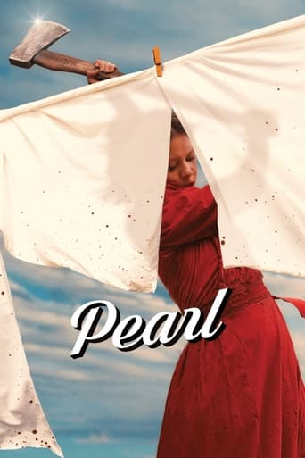
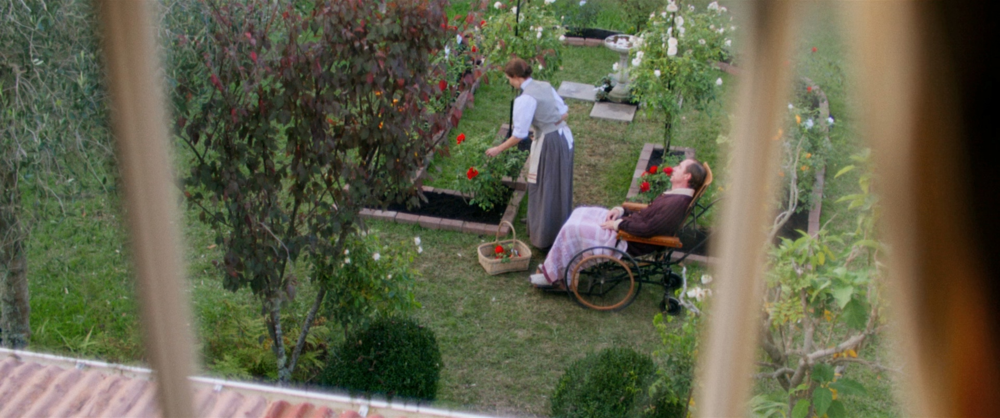
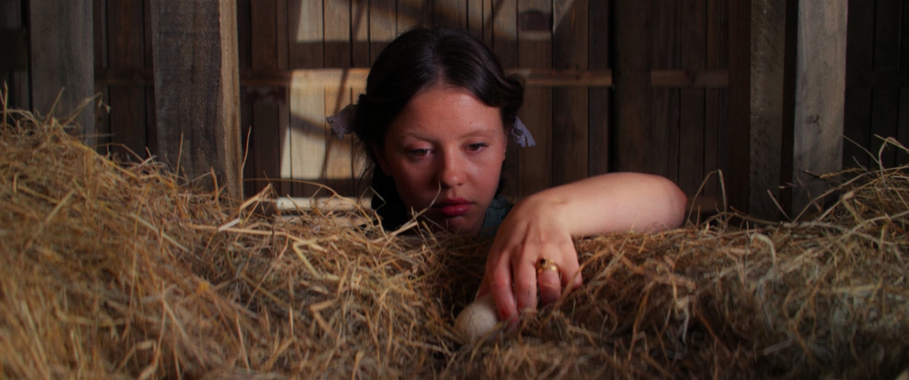
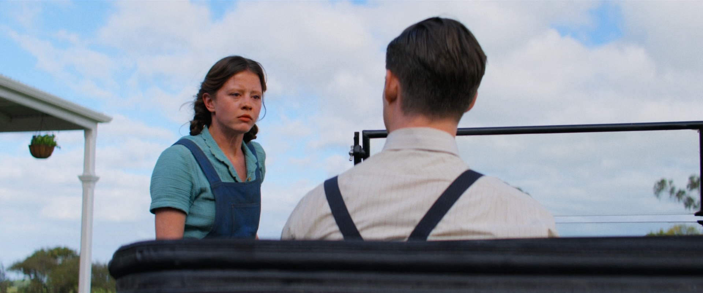
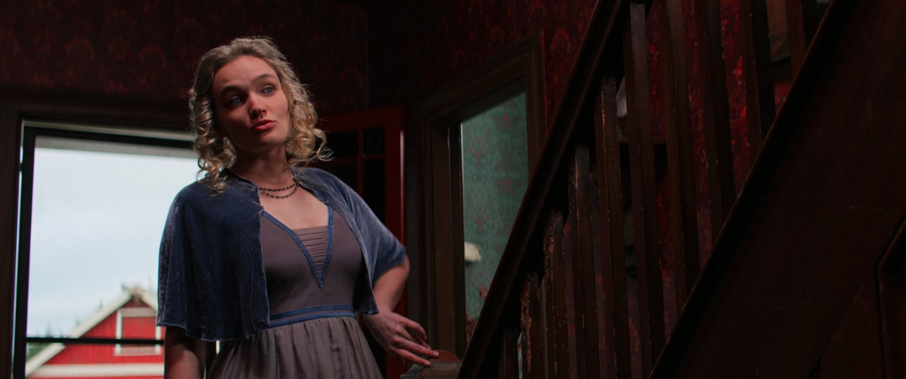
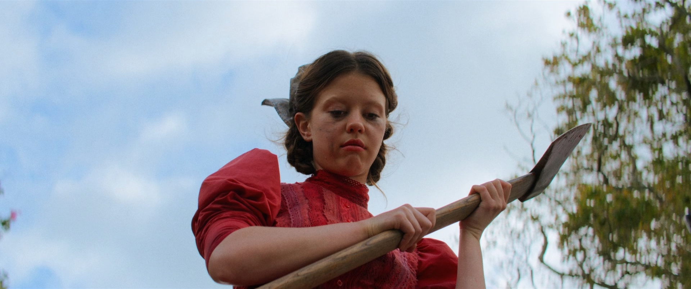

============================

Stats
Title: Pearl (2022) (1080p BluRay x265 HEVC 10bit AAC 5.1 Tigole) [QxR]
Category: Movies
Type: HEVC/x265
Language: English
Total size: 4.9 GB
Uploaded By: QxR
============================
Info:
!!! Remember I don't own or edit anything on links that might be on this torrent!!!
Pearl (2022) in 1080p, encoded with x265 in HEVC and AAC 5.1 English, with English and Spanish subtitles!
Encoded in 10 bit color at CRF 18.0, from a Blu-ray source, for the highest quality possible.

"The X-traordinary origin story."
TMDB (70%) | IMDb (7.5/10) | Rotten Tomatoes (90%) | Metacritic (73/100)
Genre
Horror
Director
Ti West
Actors
Mia Goth, Tandi Wright, Matthew Sunderland
Overview
"Trapped on her family's isolated farm, Pearl must tend to her ailing father under the bitter and overbearing watch of her devout mother. Lusting for a glamorous life like she's seen in the movies, Pearl's ambitions, temptations and repressions collide."





General : Matroska / 4.74 GiB / 1 h 42 min / 6 654 kb/s
Video : HEVC / Main 10@L4@Main / 6 238 kb/s / 1 920 pixels / 804 pixels / 2.40:1 / 23.976 (24000/1001) FPS / *Default
Writing library : x265M - 3.4+35-772bb4c84:[Windows][GCC 10.2.0][64 bit] 10bit
Encoding settings : cpuid=1111039 / frame-threads=2 / numa-pools=4 / wpp / no-pmode / no-pme / no-psnr / no-ssim / log-level=2 / input-csp=1 / input-res=1920x804 / interlace=0 / total-frames=146867 / level-idc=0 / high-tier=1 / uhd-bd=0 / ref=4 / no-allow-non-conformance / no-repeat-headers / annexb / no-aud / no-hrd / info / hash=0 / no-temporal-layers / open-gop / min-keyint=23 / keyint=250 / gop-lookahead=0 / bframes=8 / b-adapt=2 / b-pyramid / bframe-bias=0 / rc-lookahead=25 / lookahead-slices=4 / scenecut=40 / hist-scenecut=0 / radl=0 / no-splice / no-intra-refresh / ctu=64 / min-cu-size=8 / rect / no-amp / max-tu-size=32 / tu-inter-depth=1 / tu-intra-depth=1 / limit-tu=0 / rdoq-level=2 / dynamic-rd=0.00 / no-ssim-rd / signhide / no-tskip / nr-intra=0 / nr-inter=0 / no-constrained-intra / strong-intra-smoothing / max-merge=3 / limit-refs=3 / limit-modes / me=3 / subme=3 / merange=57 / temporal-mvp / no-frame-dup / no-hme / weightp / no-weightb / no-analyze-src-pics / deblock=-3:-3 / no-sao / no-sao-non-deblock / rd=4 / selective-sao=0 / no-early-skip / rskip / no-fast-intra / no-tskip-fast / no-cu-lossless / no-b-intra / no-splitrd-skip / rdpenalty=0 / psy-rd=2.00 / psy-rdoq=1.00 / no-rd-refine / no-lossless / cbqpoffs=0 / crqpoffs=0 / rc=crf / crf=18.0 / qcomp=0.60 / qpstep=4 / stats-write=0 / stats-read=0 / ipratio=1.40 / pbratio=1.30 / aq-mode=3 / aq-strength=1.00 / cutree / zone-count=0 / no-strict-cbr / qg-size=32 / no-rc-grain / qpmax=69 / qpmin=0 / no-const-vbv / sar=0 / overscan=0 / videoformat=5 / range=0 / colorprim=2 / transfer=2 / colormatrix=2 / chromaloc=0 / display-window=0 / cll=0,0 / min-luma=0 / max-luma=1023 / log2-max-poc-lsb=8 / vui-timing-info / vui-hrd-info / slices=1 / no-opt-qp-pps / no-opt-ref-list-length-pps / no-multi-pass-opt-rps / scenecut-bias=0.05 / hist-threshold=0.03 / no-opt-cu-delta-qp / aq-motion / no-hdr10 / no-hdr10-opt / no-dhdr10-opt / no-idr-recovery-sei / analysis-reuse-level=0 / analysis-save-reuse-level=0 / analysis-load-reuse-level=0 / scale-factor=0 / refine-intra=0 / refine-inter=0 / refine-mv=1 / refine-ctu-distortion=0 / no-limit-sao / ctu-info=0 / no-lowpass-dct / refine-analysis-type=0 / copy-pic=1 / max-ausize-factor=1.0 / no-dynamic-refine / no-single-sei / no-hevc-aq / no-svt / no-field / qp-adaptation-range=1.00 / scenecut-aware-qp=0conformance-window-offsets / right=0 / bottom=0 / decoder-max-rate=0 / no-vbv-live-multi-pass
Audio : AAC LC / 405 kb/s / 6 channels / English / *Default
Text #1 : VobSub / 7 563 b/s / English
Text #2 : VobSub / 6 296 b/s / Spanish
Menu
00:00:00.000 : en:Chapter 01
00:06:09.369 : en:Chapter 02
00:15:12.912 : en:Chapter 03
00:20:58.257 : en:Chapter 04
00:25:53.593 : en:Chapter 05
00:31:15.874 : en:Chapter 06
00:39:54.392 : en:Chapter 07
00:44:25.287 : en:Chapter 08
00:50:48.045 : en:Chapter 09
01:01:26.432 : en:Chapter 10
01:08:41.867 : en:Chapter 11
01:14:32.509 : en:Chapter 12
01:18:50.517 : en:Chapter 13
01:26:03.116 : en:Chapter 14
01:29:07.342 : en:Chapter 15
01:34:23.991 : en:Chapter 16
============================
Stats
Title: Pearl (2022) (1080p BluRay x265 HEVC 10bit AAC 5.1 Tigole) [QxR]
Category: Movies
Type: HEVC/x265
Language: English
Total size: 4.9 GB
Uploaded By: QxR
============================
Info:
!!! Remember I don't own or edit anything on links that might be on this torrent!!!
Pearl (2022) in 1080p, encoded with x265 in HEVC and AAC 5.1 English, with English and Spanish subtitles! Encoded in 10 bit color at CRF 18.0, from a Blu-ray source, for the highest quality possible.

"The X-traordinary origin story." TMDB (70%) | IMDb (7.5/10) | Rotten Tomatoes (90%) | Metacritic (73/100) Genre Horror Director Ti West Actors Mia Goth, Tandi Wright, Matthew Sunderland Overview "Trapped on her family's isolated farm, Pearl must tend to her ailing father under the bitter and overbearing watch of her devout mother. Lusting for a glamorous life like she's seen in the movies, Pearl's ambitions, temptations and repressions collide."




General : Matroska / 4.74 GiB / 1 h 42 min / 6 654 kb/s Video : HEVC / Main 10@L4@Main / 6 238 kb/s / 1 920 pixels / 804 pixels / 2.40:1 / 23.976 (24000/1001) FPS / *Default Writing library : x265M - 3.4+35-772bb4c84:[Windows][GCC 10.2.0][64 bit] 10bit Encoding settings : cpuid=1111039 / frame-threads=2 / numa-pools=4 / wpp / no-pmode / no-pme / no-psnr / no-ssim / log-level=2 / input-csp=1 / input-res=1920x804 / interlace=0 / total-frames=146867 / level-idc=0 / high-tier=1 / uhd-bd=0 / ref=4 / no-allow-non-conformance / no-repeat-headers / annexb / no-aud / no-hrd / info / hash=0 / no-temporal-layers / open-gop / min-keyint=23 / keyint=250 / gop-lookahead=0 / bframes=8 / b-adapt=2 / b-pyramid / bframe-bias=0 / rc-lookahead=25 / lookahead-slices=4 / scenecut=40 / hist-scenecut=0 / radl=0 / no-splice / no-intra-refresh / ctu=64 / min-cu-size=8 / rect / no-amp / max-tu-size=32 / tu-inter-depth=1 / tu-intra-depth=1 / limit-tu=0 / rdoq-level=2 / dynamic-rd=0.00 / no-ssim-rd / signhide / no-tskip / nr-intra=0 / nr-inter=0 / no-constrained-intra / strong-intra-smoothing / max-merge=3 / limit-refs=3 / limit-modes / me=3 / subme=3 / merange=57 / temporal-mvp / no-frame-dup / no-hme / weightp / no-weightb / no-analyze-src-pics / deblock=-3:-3 / no-sao / no-sao-non-deblock / rd=4 / selective-sao=0 / no-early-skip / rskip / no-fast-intra / no-tskip-fast / no-cu-lossless / no-b-intra / no-splitrd-skip / rdpenalty=0 / psy-rd=2.00 / psy-rdoq=1.00 / no-rd-refine / no-lossless / cbqpoffs=0 / crqpoffs=0 / rc=crf / crf=18.0 / qcomp=0.60 / qpstep=4 / stats-write=0 / stats-read=0 / ipratio=1.40 / pbratio=1.30 / aq-mode=3 / aq-strength=1.00 / cutree / zone-count=0 / no-strict-cbr / qg-size=32 / no-rc-grain / qpmax=69 / qpmin=0 / no-const-vbv / sar=0 / overscan=0 / videoformat=5 / range=0 / colorprim=2 / transfer=2 / colormatrix=2 / chromaloc=0 / display-window=0 / cll=0,0 / min-luma=0 / max-luma=1023 / log2-max-poc-lsb=8 / vui-timing-info / vui-hrd-info / slices=1 / no-opt-qp-pps / no-opt-ref-list-length-pps / no-multi-pass-opt-rps / scenecut-bias=0.05 / hist-threshold=0.03 / no-opt-cu-delta-qp / aq-motion / no-hdr10 / no-hdr10-opt / no-dhdr10-opt / no-idr-recovery-sei / analysis-reuse-level=0 / analysis-save-reuse-level=0 / analysis-load-reuse-level=0 / scale-factor=0 / refine-intra=0 / refine-inter=0 / refine-mv=1 / refine-ctu-distortion=0 / no-limit-sao / ctu-info=0 / no-lowpass-dct / refine-analysis-type=0 / copy-pic=1 / max-ausize-factor=1.0 / no-dynamic-refine / no-single-sei / no-hevc-aq / no-svt / no-field / qp-adaptation-range=1.00 / scenecut-aware-qp=0conformance-window-offsets / right=0 / bottom=0 / decoder-max-rate=0 / no-vbv-live-multi-pass Audio : AAC LC / 405 kb/s / 6 channels / English / *Default Text #1 : VobSub / 7 563 b/s / English Text #2 : VobSub / 6 296 b/s / Spanish Menu 00:00:00.000 : en:Chapter 01 00:06:09.369 : en:Chapter 02 00:15:12.912 : en:Chapter 03 00:20:58.257 : en:Chapter 04 00:25:53.593 : en:Chapter 05 00:31:15.874 : en:Chapter 06 00:39:54.392 : en:Chapter 07 00:44:25.287 : en:Chapter 08 00:50:48.045 : en:Chapter 09 01:01:26.432 : en:Chapter 10 01:08:41.867 : en:Chapter 11 01:14:32.509 : en:Chapter 12 01:18:50.517 : en:Chapter 13 01:26:03.116 : en:Chapter 14 01:29:07.342 : en:Chapter 15 01:34:23.991 : en:Chapter 16